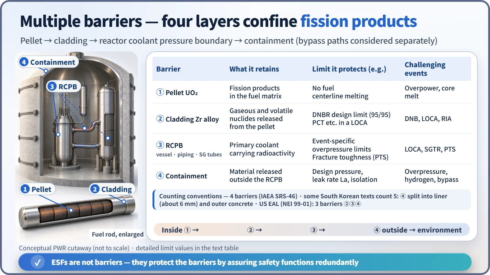
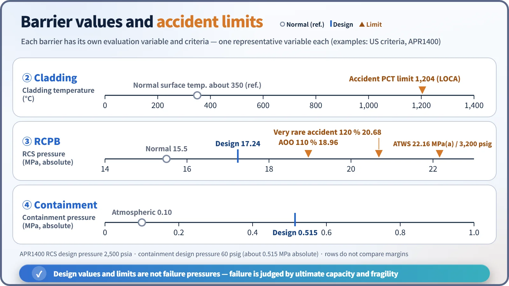
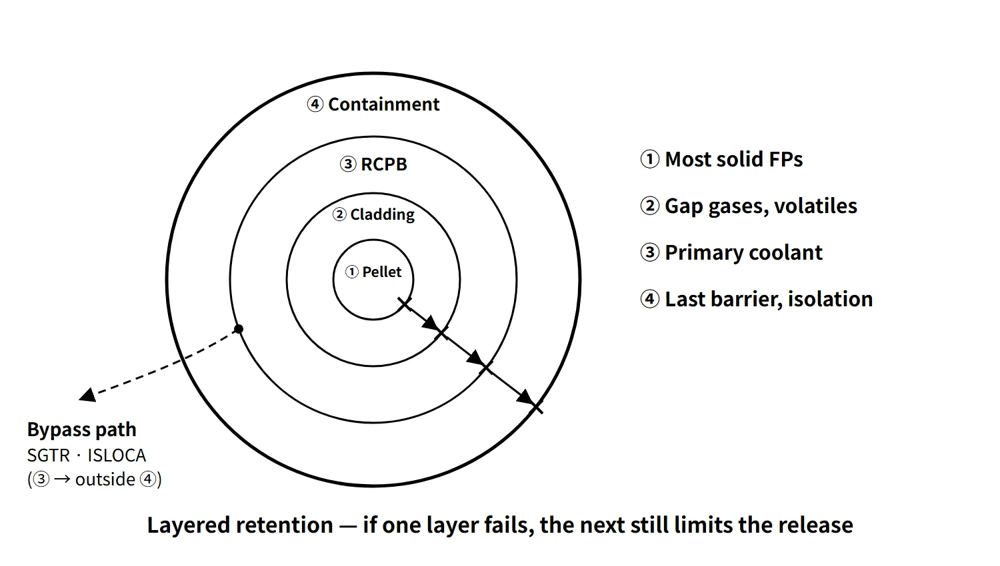

Accidents, Safety Analysis & Severe Accidents · C-SA-010
Multiple Barriers — Pellet, Cladding, Pressure Boundary, Containment and the Design Limits That Protect Each
Pellet, cladding, reactor coolant pressure boundary and containment in series, with the SAFDL, 50.46, overpressure and containment limits that protect each.
Multiple barriers are a design in which fission products, to reach the environment, must pass in series through every one of several physical barriers that differ in material and principle; in a light-water reactor these are the fuel pellet, the cladding, the reactor coolant pressure boundary (RCPB) and the containment.
IAEA SSR-2/1 Rev.1, Requirement 7 (Application of defence in depth), states that the design shall provide "multiple physical barriers to the release of radioactive material". Defence in depth is the higher-level strategy that combines these barriers with multi-level measures that protect them (prevention → control → accident response → severe-accident mitigation → emergency response).
Principle and mechanism
How many barriers do we count?
Sources count the barriers as three, four or five. Only the counting differs; the content is the same.
| Convention | Composition | Where it is used |
|---|---|---|
| 3 barriers | Cladding, RCPB, containment | US NEI 99-01 emergency classification (EAL) — the pellet is excluded because it cannot be monitored directly |
| 4 barriers (basic) | Pellet (fuel matrix), cladding, RCPB, containment | IAEA Safety Reports Series SRS-46, Canada REGDOC-2.5.2 |
| 5 barriers (some texts) | Pellet, cladding, reactor vessel (RCPB), containment inner steel liner (about 6 mm), outer reinforced concrete (APR1400 DCD: dome 1.22 m, cylinder wall 1.37 m) | Some textbooks and public-information material |
This entry uses the function-based four barriers as its baseline. The five-fold convention simply splits the containment into the liner, which provides leak-tightness, and the concrete, which provides structure and shielding. Some textbooks name the exclusion area as a fifth barrier, but that is a siting requirement that reduces dose by distance, not a physical barrier that confines material. When quoting a barrier count, state which convention is being used.
What each barrier retains
- Pellet (UO₂ ceramic): retains most solid fission products in its crystal lattice. Part of the gaseous and volatile nuclides such as noble gases, iodine and caesium diffuses out into the pellet–cladding gap.
- Cladding (zirconium alloy): confines the gaseous and volatile nuclides collected in the gap (the gap inventory). The LOCA source term of US RG 1.183 Rev.0 assumes that 5 % of the core inventory of noble gases, halogens and alkali metals is released in the gap-release phase.
- RCPB (reactor vessel, piping, pressurizer, SG tubes and other parts of the primary boundary): contains the primary coolant, including nuclides from failed fuel and coolant activation products. Note that it is not just the reactor vessel.
- Containment (steel liner + prestressed concrete): captures material released outside the RCPB, reduces it by deposition and sprays, and lets it out only at or below the design leak rate.

In series, but not independent
If the barriers were independent, the probability of losing them all at once would be the product of the individual failure probabilities. Real barriers, however, are challenged together by common causes. Loss of cooling damages the cladding, and the resulting heat and hydrogen then threaten the containment. When the RCPB breaks, as in a LOCA, the cladding (core cooling) and the containment (pressure and temperature) are loaded at the same moment. That is why the requirement is not only to stack barriers but to assure the fundamental safety functions — reactivity control, core cooling and confinement of radioactive material — by redundant and diverse means so that the effectiveness of the barriers is maintained (SSR-2/1, Requirement 7).
What it means in a plant
The design limits each barrier protects
| Barrier | Normal operation and AOO limits | Accident limits |
|---|---|---|
| Pellet and cladding | SAFDL: MDNBR ≥ 95/95 DNBR limit, no fuel centerline melting, cladding strain about 1 % | 10 CFR 50.46: PCT 1,204 °C, ECR 17 %, hydrogen 1 %, coolable geometry, long-term cooling |
| RCPB | Below 110 % of design pressure in the most severe AOO (SRP 5.2.2, ASME NB-7000) | 120 % for very rare accidents (former SRP 15.2.8: Service Level C); ATWS has a separate criterion of about 3,200 psig |
| Containment | At or below the design leak rate La (Appendix J tests), isolation function | Design pressure and temperature |
Example (APR1400): RCS design pressure 2,500 psia (17.24 MPa absolute), so 110 % = 18.96 MPa and 120 % = 20.68 MPa. The containment design pressure is 60 psig (about 0.515 MPa absolute). A design pressure is not the ultimate failure pressure.

Equipment that protects the barriers (ESF)
Engineered safety features are not barriers but means of protecting the barriers and mitigating accidents.
- Cladding: reactor protection system trip, safety injection (APR1400 example: 4 SITs + 4 trains of safety injection pumps with direct vessel injection, IRWST as the water source), auxiliary feedwater (decay-heat removal via the secondary side)
- RCPB: pressurizer safety valves and POSRVs (overpressure protection), low-temperature overpressure protection, leak detection, in-service inspection, PTS management
- Containment: spray system (depressurization and iodine removal), isolation system, hydrogen control (PARs), reactor cavity flooding, emergency containment spray backup system
Barrier challenge cases
- LOCA: loss of the RCPB → ECCS protects the cladding, sprays and isolation protect the containment.
- SGTR: loss of the RCPB (tubes) bypasses the containment through the secondary-side main steam line. It is the classic case where breaking only one of the four barriers still opens a release path.
- ISLOCA: a bypass path where the boundary between high- and low-pressure systems breaks outside the containment.
- Isolation failure: the containment is left with a penetration open from the start.
- Severe accident: core melting removes ① and ② together, and after ③ fails (vessel breach) ④ is exposed to overpressure, hydrogen, DCH and MCCI.
Regulatory and design criteria
The barrier concept is anchored in international safety standards; the US criteria below are examples of how it is turned into design requirements.
| Basis | Key point |
|---|---|
| IAEA SF-1 Principle 8, SSR-2/1 Rev.1 (2016) Requirement 7 | Application of defence in depth, multiple physical barriers, barrier effectiveness assured by multiple means for the safety functions |
| INSAG-10 (1996), INSAG-12 (1999) | Combining the levels of defence in depth with barrier protection |
| For example, US 10 CFR 50 Appendix A, GDC 10, 14, 15, 16, 50 | SAFDL, prevention of RCPB leakage and rupture, RCS design margin, containment leak-tight seal and design basis |
| For example, US 10 CFR 50.46, Appendix J | ECCS acceptance criteria, containment leak-rate testing |
How the requirements have evolved
- Earlier design practice focused on keeping the barriers intact within the range of design-basis accidents. After the 2011 Fukushima accident showed that loss of cooling can defeat several barriers at once, design extension conditions (DEC) were introduced, extending the requirement to maintaining the containment barrier function even after core damage.
- SSR-2/1 Rev.1 (2016) stresses DEC and the practical elimination of early or large releases.
Easily confused pairs
| Multiple barriers | Defence in depth | Redundancy | Shielding | |
|---|---|---|---|---|
| Target | Radioactive material | The whole safety strategy | Components with the same function | Radiation |
| Form | Different physical walls arranged in series | Multi-level measures + barriers | Several identical trains | Concrete, water etc. |
| Example | Pellet, cladding, RCPB, containment | 5 levels | 4 safety injection trains | Biological shield wall |
Key points at a glance
- Definition: different physical barriers arranged in series on the fission-product release path — the physical element of defence in depth.
- Four barriers: pellet (solid FPs) → cladding (gap gases and volatiles) → RCPB (coolant activity) → containment (last barrier).
- Five-fold convention (some texts): the containment split into the liner (6 mm) and the concrete (APR1400 DCD: dome 1.22 m, cylinder wall 1.37 m).
- Design limits: SAFDL (DNB prevention at 95/95), 50.46 (PCT 1,204 °C, ECR 17 %), RCPB overpressure 110 % (common to AOOs) plus event-specific limits (e.g. 120 % in former SRP 15.2.8), containment design pressure and leak rate.
- Protective equipment: trip, ECCS, auxiliary feedwater / POSRV, LTOP / sprays, isolation, PARs.
- Challenges: LOCA (simultaneous challenge), SGTR and ISLOCA (bypass), isolation failure, severe accident.
- Core idea: layered retention and material diversity, but not fully independent (common causes) → barrier effectiveness kept by assuring the safety functions redundantly.
